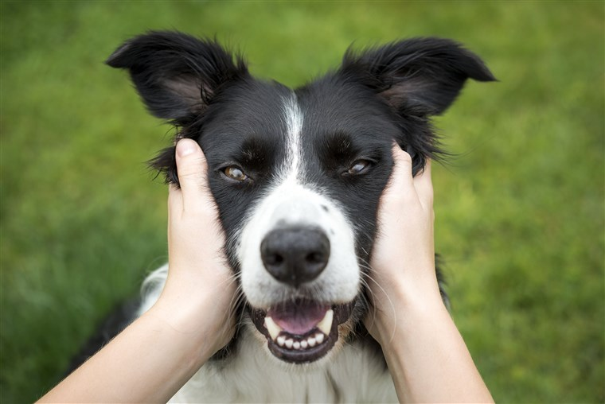

BREAKING NEWS A yellow lab is spotted
enjoying a beautiful day at the park
The Yellow lab, Bernie spent his afternoon at the local park as part of his new weekly routine.
Bernie was just recently adopted from the 4th St shelter and is enjoying new new life with his new family. He especially loves
his new cushy bed and unlimited treats. Bernie's family say that he is the most wonderful addition to their family and they are loving
every minute with him.
It is discovered that pitbulls are not dangerous, but they are
one of the most affectionate dog breeds. Several sources have
stated this dog behaves very well.
State champion of cuteness, Fluffy the golden retreiever, enjoys
a victory lap around the dog park.

Local border collie, Kona, competes in agility race.
2 dogs, one republican and one democrat can still enjoy a run
together.
Strong boy gets accepted to police academy.
Good boi back on his feet thanks to a generous wheelchair
donation. Good boi says he is so happy that he can run again.